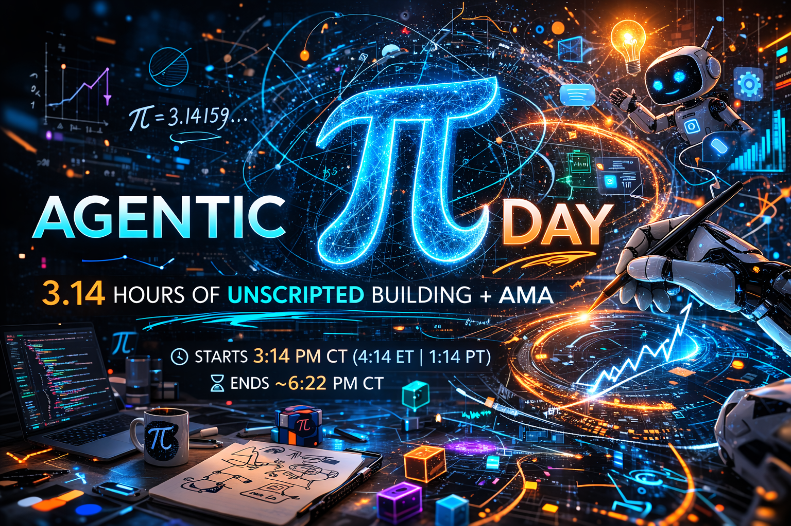

3.14 Hours of Agentic AI | Unscripted Building & AMA
March 14, 2026 • 3:14 PM • Strands SDK • AWS
No slides. No scripts. No fluff. That was the plan.
I posted on LinkedIn on March 10th around noon, announcing a live, unscripted session:
The only thing scripted? The start time. 3:14 PM. Because... π.
110+ people signed up. (and counting, as of 24 hours before the event)
| Time | Module | What We Build |
|---|---|---|
| 0:00 | Setup & Intro | Environment ready + concepts |
| 0:20 | Module 1: First Agent | Basic FAQ agent |
| 0:45 | Module 2: Tools & MCP | Agent with tools + MCP server |
| 1:20 | Module 3: Memory | Persistent memory + context mgmt |
| 1:50 | Module 4: Multi-Agent | Triage + specialist agents |
| 2:20 | Module 5: Evals & Safety | Eval suite + guardrails + OTel |
| 2:50 | Module 6: Deploy | Live on AWS AgentCore |
Strands SDK Amazon Bedrock MCP AgentCore OpenTelemetry
AI systems that can autonomously perceive, reason, act, and learn
| Chatbot | Copilot | Agent | |
|---|---|---|---|
| Reasoning | Single-turn | Multi-turn | Multi-step planning |
| Actions | Reply only | Suggest | Execute tools |
| Memory | None | Session | Persistent |
| Autonomy | None | Low | High |
flowchart TD
A["User Prompt"] --> B["🧠 REASON\nLLM thinks about the task"]
B --> C{"DECIDE"}
C -->|"Done"| D["✅ RESPOND\nReturn final answer"]
C -->|"Need more info"| E["🔧 ACT\nCall a tool"]
E --> F["👁️ OBSERVE\nSee tool results"]
F --> B
This Reason → Act → Observe loop is the foundation of all agents
LLM for reasoning & planning
Amazon Bedrock + Claude Sonnet
Defines personality, responsibilities, constraints
Python functions the agent can call
APIs, databases, MCP servers
Session, persistent, episodic memory
Multi-agent patterns: triage, swarm, graph
Input/output validation, evals, observability
Open-source, model-driven agent framework from AWS
from strands import Agent, tool
@tool
def lookup_order(order_id: str) -> dict:
"""Look up a customer order by ID."""
return database.get_order(order_id)
agent = Agent(
system_prompt="You are SupportBot...",
tools=[lookup_order],
)
response = agent("What's the status of order ORD-10001?")Used in production by Amazon Q Developer, AWS Glue, and more
| Pattern | How It Works | Best For |
|---|---|---|
| ReAct | Reason → Act → Observe loop | General purpose (default) |
| Plan-and-Execute | Plan all steps, then execute | Complex multi-step tasks |
| Reflexion | Generate → Critique → Refine | Quality-sensitive outputs |
| ReWOO | Separate plan/execute/solve | Parallel tool execution |
flowchart TD
T["🎯 Triage"] --> B["💰 Billing"]
T --> Tech["🔧 Technical"]
T --> R["📦 Returns"]
flowchart TD
A["Agent A"] -->|handoff| B["Agent B"]
B -->|handoff| C["Agent C"]
C -->|handoff| A
flowchart TD
A --> B & C --> D
Today: Agents-as-Tools, where a triage agent delegates to specialist agents
Open standard for agent ↔ tool communication
from fastmcp import FastMCP
mcp = FastMCP(name="Product Catalog")
@mcp.tool()
def get_product(sku: str) -> dict:
"""Get product details by SKU."""
return products[sku]Transport: stdio (local) | HTTP (remote) | SSE (streaming)
flowchart LR
subgraph L1["🟢 L1: Always Loaded"]
A1["System Prompt"] ~~~ A2["Tool Defs"] ~~~ A3["Conversation"]
end
subgraph L2["🟡 L2: On-Demand"]
B1["FAQ"] ~~~ B2["Memory"] ~~~ B3["Policies"]
end
subgraph L3["🔵 L3: External APIs"]
C1["Catalog"] ~~~ C2["Orders"] ~~~ C3["Tickets"]
end
L1 --> L2 --> L3
Agents are non-deterministic: same input, different (valid) outputs
| Dimension | What to Measure | Method |
|---|---|---|
| Task Completion | Did it solve the problem? | Keywords + LLM Judge |
| Tool Selection | Right tools called? | Trace analysis |
| Safety | No harmful outputs? | Guardrail checks |
| Reasoning | Logical path? | LLM-as-Judge |
| Efficiency | Tokens / latency | OTEL metrics |
Best practice: Automated evals (CI) + LLM-as-Judge (periodic) + Human review (calibration)
gantt
title Agent Request Trace (1.2s total)
dateFormat X
axisFormat %L ms
section Model
model_inference (150 tokens) :0, 400
model_inference (200 tokens) :410, 800
section Tools
tool_call lookup_order :400, 410
section Response
streaming response :800, 1200
Strands emits OTEL-compliant spans → CloudWatch, Datadog, Jaeger
Managed platform for deploying AI agents at scale
| Service | What It Does |
|---|---|
| Runtime | Serverless hosting (up to 8h sessions) |
| Gateway | Convert APIs → MCP tools |
| Identity | Auth (Cognito, Okta, Entra ID) |
| Memory | Persistent + episodic memory |
| Policy | Natural language guardrails |
| Evaluations | 13 pre-built eval metrics |
agentcore configure -e app.py
agentcore launch
agentcore invoke '{"prompt": "Help me with my order"}'
flowchart LR
User["👤 User"] --> Triage["🎯 Triage Agent"]
Triage --> Billing["💰 Billing"]
Triage --> Technical["🔧 Technical"]
Triage --> Returns["📦 Returns"]
subgraph Tools["Shared Tools"]
T1["Order Lookup"] ~~~ T2["KB Search"] ~~~ T3["Tickets"] ~~~ T4["MCP Catalog"]
end
Billing --> Tools
Technical --> Tools
Returns --> Tools
python module_01_first_agent/agent.py
Open the workshop docs for step-by-step instructions
Each module builds on the previous one, and by the end, you'll have a production-ready multi-agent system.
Extending agents with tools and the Model Context Protocol
@tool
def lookup_order(order_id: str) -> dict:
"""Look up a customer order."""
return ORDERS.get(order_id)Tools turn agents from "answering" to "doing"
Making agents remember and managing the context window
Triage agent routing to specialist agents
@tool
def route_to_billing(query: str) -> str:
"""Route to Billing Specialist."""
response = billing_agent(query)
return response.message.content[0]["text"]
triage_agent = Agent(
tools=[route_to_billing, route_to_technical, route_to_returns]
)Testing, protecting, and monitoring your agents
# Run evaluation suite
python module_05_evals/eval_suite.py --eval
# Chat with guardrails
python module_05_evals/eval_suite.py --chat
# Enable OpenTelemetry tracing
python module_05_evals/eval_suite.py --chat --otelProduction deployment on Amazon Bedrock AgentCore
# Configure deployment
agentcore configure -e module_06_deploy/app.py
# Launch on AgentCore Runtime
agentcore launch
# Invoke the deployed agent
agentcore invoke '{"prompt": "What is your return policy?"}'Workshop materials available at the docs site